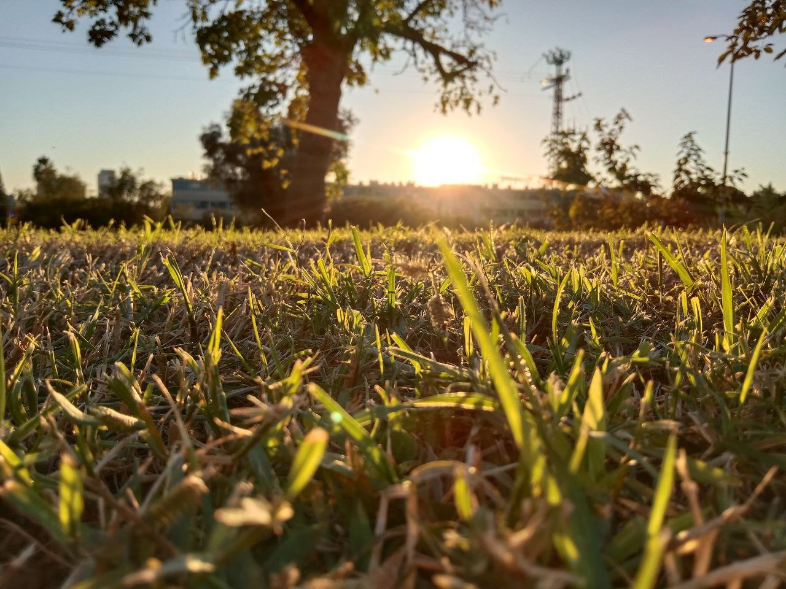

Clojure in new fields - opening up

(🎥 video discussion)
Near the end of November 2024, we had a couple of small meetings around the presence of Clojure in academia, one of the areas where we are looking to make Clojure gradually more present.
The meetings back then did affect our actions and followup conversations at the Clojurians Zulip Chat. A broader and more general process initiated: shifting our attention to the growth of Clojure into new fields and use cases.
In this post, we seek to clarify our current activity to help reinitiate more systematic collaboration in that direction.
As usual, it is a personal perspective. Hopefully, more people will use this blog to share their thoughts on the topic.
TL;DR
We are now more ready than earlier to explore the relevance of Clojure in new fields like education, research, academic papers, or art, thanks to recent progress around tooling, libraries, beginner resources, and community building.
We propose proceeding in small steps through ad-hoc meetings, lightweight conferences, and short-term research projects.
One space to support that is the new macroexpand gatherings series. We encourage you to mark you availability and preferences: Poll.
If you have any thoughts or ideas: Please reach out.
Now, let us dive more into the details.
Why
There are many “Why Clojure” blog posts out there, and we will not try to reproduce their arguments here.
Let us just recognize that the efforts we are discussing here are not without a reason.
Many of us face technical challenges at work, and not only in engineering work. In research, teaching, and data exploration; in academia, and elsewhere; sometimes, programming is necessary. Often, programming can bother us with complexity, conceptual obstacles, and various kinds of friction.
Some of us believe that Clojure can offer a relief through simplicity, conceptual elegance, and lightweight exploration. Arguably, this can be relevant to anybody who has some data and is open-minded and curious to enjoy new ways of thinking.
Growth
In many business situations, this might not be the best time for non-mainstream engineering choices, which are perceived as too risky. For this and other reasons, it is not the easiest time to work on Clojure growth.
However, that is what we are actively working on now.
The first reason is that it is necessary. Without new and diverse fields and use cases, our open-source efforts cannot be made sustainable.
The second reason is that we are ready. As discussed below, a few parts of the solution have matured enough to proceed and finally meet more diverse crowds.
The third reason is the Scicloj perspective within the broader Clojure community. With our focus on data analysis, we offer a pathway as to how to create “quickstart” applications for various use cases (as demanded in the recent Clojurists-together survey).
We will keep looking inward and outward at the same time: creating small collaborations, helping each other, and reflecting, while reaching out to new crowds and acting more in the public sphere.
Community, collaboration, continuity, and communication
In our coming expansion to new fields, let us recognize a few of our usual open-source challenges. Arguably, knowing them is going to be even more important now.
Scicloj is a group of people who collaborate and support each other. Throughout the years, a few hundred people have been lightly involved in various ways. However, at any given point in time, typically a few dozens are actually involved, and only a handful of people are active in library maintenance and essential activities.
The people involved change frequently. All of us need to stop sometimes, then return after a few weeks or months. Such pauses are often unplanned. Free time is inherently variable, and that is always felt in volunteer-based communities.
Our goals, however, are long-term. We need to maintain continuity, and see beyond those waves by embracing uncertainty.
During the last year or so, this has been especially challenging. For a mix of reasons – global, local, and personal – it has not been the easiest time for a few of us. Alongside the beautiful progress in libraries, tooling, and community building, many of us had to slow down and focus on life challenges.
Our processes need to be loose enough and stable enough. It is a delicate balance. While we often collaborate tightly, we should avoid depending on each other’s tasks. We need to decouple dependencies across project timelines, recognize bottlenecks and readapt. We need to communicate frequently, and use our everyday communication as a form of light touch knowledge management. We need to support each other and help each other find comfort.
Of all the above, let us repeat the importance of communication. Let us keep chatting frequently so we can be together in those fluctuations.
Clojure in academia
One space we are gradually addressing more is academia.
Clojure is not very common in academic teaching, but throughout the years there have been some beautiful projects that used Clojure in university courses. Some well-known courses were taught by Lee Spector, Elena Machkasova, The University of Helsinki, and Attila Egri-Nagy. Some of these projects are still active.
While Clojure is not commonly cited in academic papers, during the last few years we have met many researchers who are curious about Clojure. Quite a few of them actively use it. Others avoid using it as it is considered too far from the mainstream and thus difficult to communicate with colleagues.
In certain fields, Clojure is still perceived as a niche. Some of the relevant people act alone and are not so visible to each other.
Hopefully, we can improve the situation by making communication easier, providing spaces to sync up and think, and helping the various projects, groups, and individuals become more visible.
The November meetings
Here we share a few notes from the discussions we had last November, where a few Clojure-friendly academics met and thought together for a while.
See also the #data-science>scicloj paper - initial meeting topic thread at the Clojurians Zulip Chat and following topic threads on related topics.
Many thanks especially to Blaine Mooers, who highly affected those conversations. As a biochemistry professor, Blaine offered a few thoughtful insights and observations regarding the ways various technologies have grown in academia and what we may learn from that.
Here are some observations and insights by a few of the people involved.
- We should learn from what other tech communities did when they were smaller. See the paper about Matplotlib, for example. The Tidyverse (and the publishing around it) can be a source of inspiration.
- Making Clojure easy is essential. For better reach to academic groups, tooling is important. Also, a cohesive stack of libraries.
- Possible technical aspects of the Clojure ecosystem stack could be documented in the form of academic papers: extending the grammar of graphics, nontrivial interop solutions, and perspectives on the history of Lisp in AI are some examples.
- At some point, we may initiate new implementation projects on certain topics that look promising nowadays. Two possible examples are Applied Category Theory and Topological Data Analysis.
- Alongside (1) technical aspects and (2) applications, a third type of academic writing can be: (3) uses in education.
- Finding reviewers for a Clojure paper might be a challenge. At some point, we may try to assemble a list of potential reviewers.
- Conference talks are a quicker and easier path than papers. We can organize our own online conferences. Our own conference proceedings would take more effort (and will mainly need a decent group of reviewers).
- Applications of Clojure in education (point (3) above) – this path seems to be in consensus as a preferred and accessible way to make Clojure visible in academia in the short term. A few of the people involved have been putting lots of thought into teaching Clojure for years.
- We need to create more visible spaces to share and discuss these observations and insights.
Relevant progress
Recently, we have had some progress in a few relevant directions.
A cohesive stack of libraries. The Noj toolkit for data science has been maturing. Its documentation and integration tests have received quite a few contributions by Carsten Behring and a few other contributors.
Beginner resources and workshops. The Noj getting started repo and 🎥 video provides a welcoming way for people who know some Clojure but are new to Noj. Kira Howe’s workshop (notes here) at the BobKonf 2025 conference introduced Clojure for data analysis to people who are new to Clojure. We are working on additional workshops of this kind for May 10th. Additional tutorials are evolving too.
Beginner-friendly tooling. Our growing set of tutorials uses the Kindly standard for data-visualization and notebooking. In addition to the existing support in Clay, Timothy Pratley and Carsten Behring have been working on the kindly-render engine, that is now almost complete and allows various Clojure tools to support the standard. They have been working with a few Clojure tool makers, and the result is that a few tools now offer decent support for Kindly visualizations (and thus Noj). A few notable examples are Clojupyter, VSCode Calva Webview, and Intellij Cursive inline HTML. We have been also working on beginner-friendly minimal-setup modes for Clay using a live-reload feature by Ken Huang. See a few recent video demos: 🎥 #1, #2, #3.
Meetups. We have moved more of the Scicloj activity at the various dev & study groups to the public sphere. Most recent meetups have been focusing on workflow demos and AI systems. You can follow them at the 🎥 video channel, 📣 Clojureverse announcements, and 📆 Caldendar feed.
Conferences. The SciNoj Light online conference in May 16-17 is a first attempt to explore our current conference-organizing approach. The conference is mostly a way to drive new collaborations around research, writing, and speaking. We support the speakers throughout the process of proposing and preparing the talks and the accompanying notes. It is already safe to say that the method works, and soon we will announce the amazing list of speakers. It is not a small effort, but we have now verified that it is doable. The talk topics include 🚌 public transportation networks, 🚓 road safety, 🌊 Computational Fluid Dynamics, ⛈ weather forecasting, 🎮 Cognitive Psychology of geometric games, 🧠 brain science, 🐛 program analysis, 📰 text analysis in political context, and more. More events will follow later this year.
Communication. The Clojurians Zulip Chat Zulip is an essential building block in both our communication and our knowledge management. We are thankful to Gert Goet who has been nurturing it throughout the years, and to the broader team of admins that has grown recently. During the last few months, we put even more care into helping people join the platform and settle in. We organized Zulip study sessions and discussed it in additional meetups. We are gradually shifting some of our announcements and discussions to a web-public channel: 🎉 #scicloj-webpublic, to make things more accessible to people who we not logged in.
How we continue
With our currently limited resources, we will have to focus on lightweight small steps in the short term.
SciNoj Light can serve as a model for the following steps. We will have additional target dates later this year. Toward those dates, people can work on small research, on writing tutorials, and preparing talks. As usual, we will work together and create spaces to conveniently brainstorm and share progress.
At the new macroexpand gatherings series, we will maintain broader discussions on Clojure’s expansion to new fields. Academia, research, education, data analysis, and art, are a few of the directions we will explore. Community members will share past experiences, discuss pain points, and come up with actionable ways to collaborate.
As usual, we are hoping to hear your thoughts. If you have any comments or wish to propose anything, let us talk.